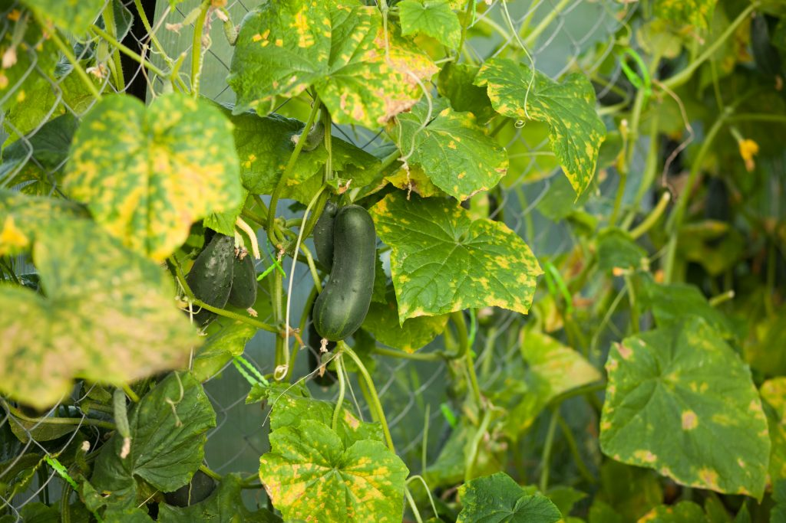
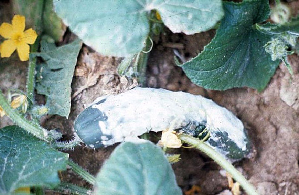
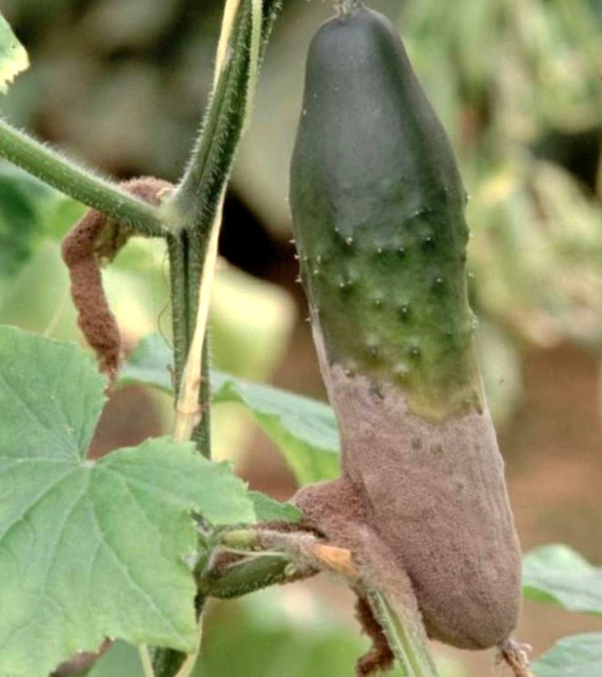
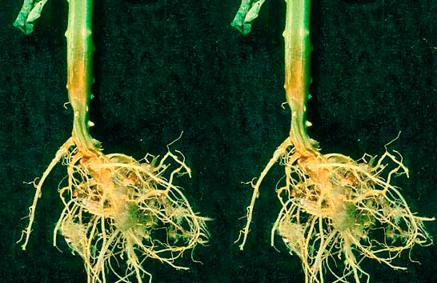

Каталог
САМЫЕ ОПАСНЫЕ БОЛЕЗНИ ОГУРЦОВ: КАК РАСПОЗНАТЬ И ВЫЛЕЧИТЬ. НАРОДНЫЕ МЕТОДЫ

Иной раз замечаешь, как подросшие побеги огурца, не начав даже плодоносить, вдруг неожиданно вянут и засыхают. Почему растение вянет? Потому что не поступает к листьям вода. Значит, или корни повреждены или сам стебель. Если, конечно, влаги в почве достаточно. Два разных заболевания - белая гниль огурца и корневая гниль имеют такие же признаки.
Белая гниль

Белая гниль огурца вызывается грибом Склеротиния. В начале лета молодые растения погибают от поражения корневой системы и стеблей. А вообще-то болезнь поражает растение во всех фазах его развития - от всходов до созревания плодов и развивается на всех частях растения.
Вначале в основании стебля образуются водянистые мокрые пятна, которые покрываются белой ватообразной грибницей. Постепенно заболевание перемещается вверх по стеблю растения. Пораженные ткани желтеют, буреют, покрываются хлопьевидным пушистым налетом. Стебли быстро засыхают. При загущенных посадках и плохой вентиляции заболевание быстро распространяется, уничтожая плодоносящие растения. Инфекция сохраняется в почве и в растительных остатках в виде грибных склероций. Повышенная влажность почвы и низкие суточные температуры являются наиболее благоприятными условиями для развития этого заболевания. Спровоцировать его можно, полив огурцы холодной водой на ночь.
Меры борьбы:
- сбор и сжигание растительных остатков пораженных растений;
- регулярные выбраковки загнивших стеблей и плодов;
- удаление загнивших растений с комом земли;
- разрешено проводить один полив растений раствором планриза (0,1%) во время вегетации.
Серая гниль

Серая гниль - грибное заболевание многих овощных культур, часто встречается и на огурцах. Это бактериальная болезнь, поражающая все части растения от корней до цветков. В местах поражения появляются бурые расплывчатые водянистые пятна, которые быстро сливаются и покрываются дымчато-серым налетом. Плоды покрываются бурыми мокрыми пятнами с плесневидным серым налетом. Споры постепенно перезаражают соседние растения, что в итоге приводит к гибели урожая. Основные факторы развития серой гнили - избыток влаги и пониженные температуры. В целях профилактики нельзя загущать посевы. Пораженные участки посыпать толченным древесным углем или золой. При поливе избегать попадания воды на растения.
Меры борьбы:
- постоянные прочистки с обрезкой пораженных листьев, стеблей и плодов;
- профилактическая обработка растений таким составом: 1 стакан древесной золы, 1 стакан мела, 1 ч. ложка медного купороса;
- при явных признаках заболевания обработать разрешенными фунгицидами.
Корневая гниль

Корневая гниль - одна из самых часто распространенных и опасных болезней. Внешние проявления ее схожи с сосудистым бактериозом. Корневая гниль развивается по причине неблагоприятных условий роста растений, а также во время плодоношения. Растения ослабевают, подвергаясь атакам бактерий и грибов из почвы. Если вырвать растение из земли, то вы увидите, что корни его порыжели и стали трухлявыми. Растение подвергается этому заболеванию в плотных кислых почвах, а также если почва в теплице охлаждается ниже 14°С или перегревается выше 28°С, или провели полив холодной водой.
При первых признаках срочно принимайте меры. Можно спасти растение, подсыпав к стеблям слой плодородной земли, но это поможет в самом-самом начале заболевания.
Лучше не дожидаться заболевания и своевременно проводить профилактические меры:
- подбор семян, устойчивых к болезням;
- желательно соблюдать севооборот, сделать это в теплице невозможно, тогда каждые два года необходимо заменять верхний слой земли, снимая не менее 10 см;
- создавать хорошие условия для формирования полезной микрофлоры, для чего вносить хорошо перепревший компост;
- препарат "Фитоспорин М" помогает защитить растения от пероноспороза, от мучнистой росы, от бурой пятнистости, корневых гнилей.
Растение поможет растению
Полезно опрыскивать почву настоем крапивы - это способствует оживлению микрофлоры.
Настой крапивы настаивают или в эмалированной, деревянной или пластмассовой емкости, в железной нельзя! Закладывают рубленые побеги крапивы, срезанные до цветения, заливают их водой, сверху закрыть крышкой, емкость должна стоять на солнце. Каждый день раствор нужно размешивать палкой. Его настаивают неделю до тех пор, пока не перестанут выходить пузырьки. Если жидкость приобрела жуткий запах, значит, она готова к применению. Для этого определяют густоту и разводят настой в 10 раз. А чтобы легче удалить остатки лучше их опускать в воду в сетке из-под лука.
Из опыта огородников
Огородники утверждают, что в теплице не будет болезней, если ее часто проветривать, хоть и бытует мнение об опасности сквозняков. Но они опасны только тогда, когда получается резкий перепад температур и влажности. Значит, не нужно делать такого контраста, пускай по верху теплицы гуляет сухой теплый ветерок - это будет способствовать здоровью огурцов и никакие грибки, гнили не прицепятся к ним.
Самые опасные болезни огурца
Главное поставить точный диагноз. Самой опасной болезнью огурца является ложная мучнистая роса или пероноспороз. Это заболевание поражает только листья огурца, от которых остаются лишь черешки. Пероноспороз - массовое поражение растений, причем появляется чаще всего в разгар лета - в середине июля, когда уже мы ждем массового созревания плодов.
Как распознать болезнь?
Чаще всего на верхней стороне листьев образуются желто-зеленые угловатые маслянистые пятна. Их размер и количество резко увеличивается. В отличие от бактериоза с нижней стороны листа в местах пятен всегда образуется серо-фиолетовый налет, представляющий собой спороношение гриба. При наличии капельно-жидкой влаги (дождь, роса, полив по листьям) споры прорастают, и появляется множество новых пятен, которые сливаются между собой. Листья приобретают желто-бурый цвет, затем бурый и засыхают. Растения погибают в течение 8-14 дней. Большая часть урожая погибает, а если болезнь появляется на цветущих растениях или раньше, то плодов вообще не будет.
Ложную мучнистую росу на огурцах сравнивают с пожаром, тушить который нужно сразу.
Меры борьбы: использование стойких сортов и гибридов к этому заболеванию, необходимо повышать общую устойчивость растений к болезням, для чего регулярно вносить минеральные и органические удобрения. В середине вегетации эффективны внекорневые подкормки (1,7 % раствора нитроаммофоски) или кристаллина с микроэлементами (бором, молибденом, цинком), исключить в теплице наличие сильного конденсата на пленке, когда растения находятся в состоянии постоянного парникового эффекта, еще, если при этом наступает резкое колебание температур. Ежедневно уже с 15 июля осматривать поверхность листьев на наличие желто-зеленых пятен размером от 0,5 см и более. При их обнаружении сразу приостановить поливы и подкормки. Когда влажность понизится, нужно опрыснуть огурцы раствором топаза из расчета 2 мл на 10 л воды или Хомом, хлороокисью меди (20 г на 10 л воды). Раствор не должен быть холодным, оптимальная температура 22-24°С.
Народное средство борьбы с этой болезнью
Можно опрыскать огурцы сывороткой или смесью сыворотки и медного купороса: 1 ч. ложка медного купороса растворяют в 7 л воды и смешивают с 3 л сыворотки. Или использовать суточный настой в закрытой емкости измельченного чеснока (30-50 г на 1 л воды) с добавлением (перед опрыскиванием) 9 л воды. При появлении новых пятен на листьях, опрыскивания следует повторять. Можно опрыскать растения раствором марганцовки - 2 г на 10 л воды при появлении первых признаков болезни.
Настоящая мучнистая роса
Это заболевание характерно как для открытого грунта, так и для теплиц. Чаще всего появляется, когда ночи становятся заметно холоднее (конец июля - начало августа), но учитывая наш резко-континентальный климат, может появиться и раньше.
Мучнистая роса появляется в виде белого налета, сначала на верхней стороне листа, а затем на нижней. Это грибница и споры гриба. Из отдельных пятен налет вскоре становится сплошным. Листья желтеют, буреют, становятся хрупкими и засыхают. Урожайность огурцов в открытом грунте снижается на 50-70%, а в теплицах до 100%.
Народные средства против мучнистой росы
- молочную сыворотку или молочный обрат разводят в десятикратном количестве воды и обрабатывают листья. Это приводит к образованию на их поверхности пленки, препятствующей размножению гриба;
- аналогичными свойствами обладает раствор силиката натрия (силикатный клей), который нередко используют в качестве прилипателя совместно с фунгицидами;
- известны фунгицидные свойства крапивы жгучей (готовят настои, отвары);
- использование настоя коровяка: 1 кг коровяка заливают 3 л воды и настаивают 3 суток. После этого настой процедить, долить 3 л воды, на 10 кв.м. расходуют 1-1,5 л настоя;
- 0,5 стакана золы залить 1 л горячей воды, настоять двое суток, процедить, добавить 4 г мыла (предварительно растопленного в воде). Обработку провести 2 раза с интервалом в 7 дней;
- кальцинированную соду (4 г) растворить в 1 л воды, добавить 4 г мыла. Обрабатывать растения 2 раза с интервалом в 7 дней.
Итак, если подвести итог, оказывается, защитить огурцы от болезней просто, надо лишь соблюдать следующие правила:
- выбрать устойчивые к заболеваниям сорта огурцов;
- подобрать место для посадки на солнышке, без сквозняков;
- не загущать посевы, чтобы грядка хорошо проветривалась;
- поливать растения только теплой водой и не сверху "на голову", а под корень;
- в теплице поливать огурцы рано утром, чтобы в прохладную ночь там было сухо;
- в открытом грунте поливать огурцы или в сумерки или утром, чтобы яркое солнце не обожгло листья через капельки-линзы;
- в холодную погоду полив сократить до минимума;
- обеспечить полноценное питание растениям.
Естественно, что каждый огородник хочет не просто вырастить много огурцов, но чтоб они были еще вкусными, красивыми, пригодными для заготовок впрок. Успехов всем!